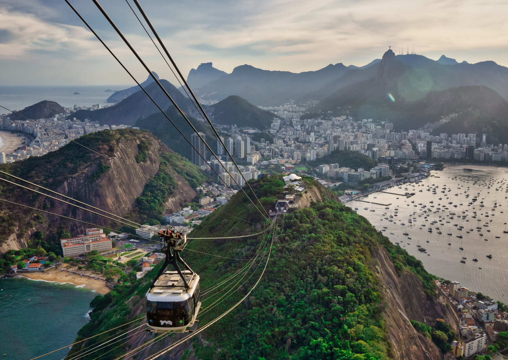
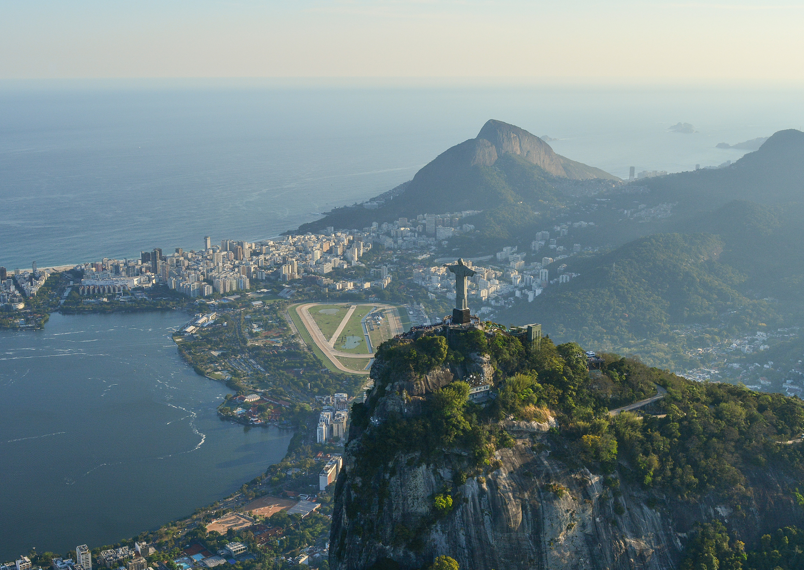
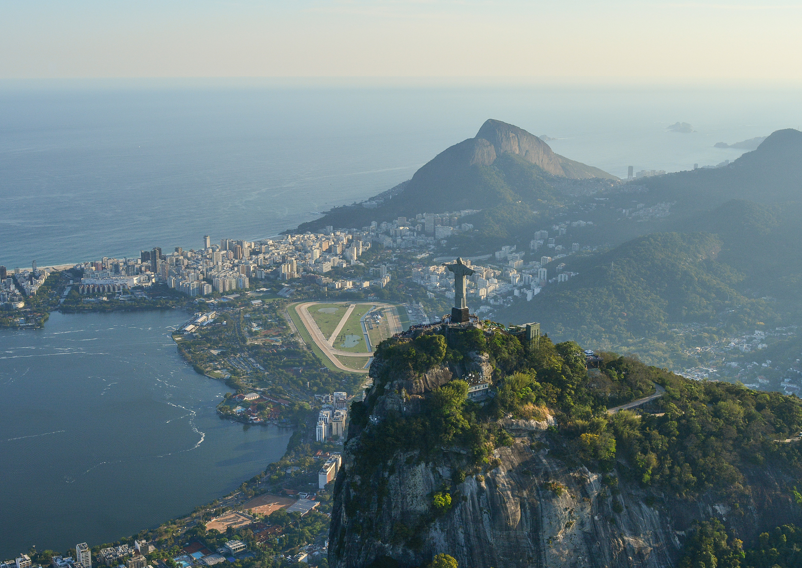
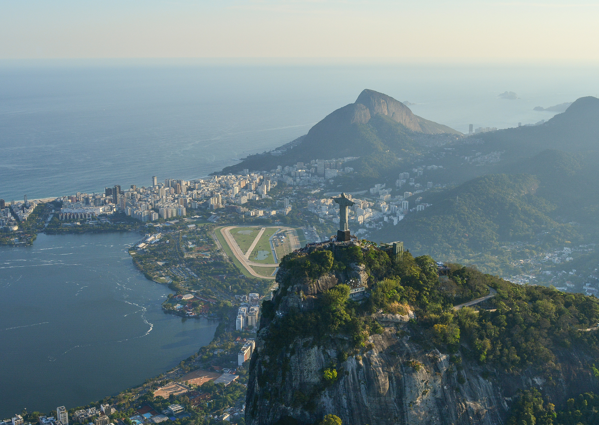

Fotos

 

O Hino Nacional Brasileiro é um dos quatro símbolos oficiais da República Federativa do Brasil, conforme estabelece o art. 13, § 1.º, da Constituição do Brasil. Os outros símbolos da República são a Bandeira Nacional, as Armas Nacionais e o Selo Nacional.
Ver maisO Hino Nacional brasileiro é um dos símbolos nacionais de nosso país, segundo a legislação em vigência. A melodia do Hino Nacional foi composta por Francisco Manuel da Silva, em 1831, por conta da abdicação de d. Pedro I, e a letra foi escrita por Joaquim Osório Duque-Estrada, em 1909, e escolhida em um concurso.
Contrate Agora
Ouviram do Ipiranga as margens plácidas
De um povo heroico o brado retumbante,
E o sol da Liberdade, em raios fúlgidos,
Brilhou no céu da Pátria nesse instante.
Se o penhor dessa igualdade
Conseguimos conquistar com braço forte,
Em teu seio, ó Liberdade,
Desafia o nosso peito a própria morte!
Ó Pátria amada,
Idolatrada,
Salve! Salve!
Brasil, um sonho intenso, um raio vívido,
De amor e de esperança à terra desce,
Se em teu formoso céu, risonho e límpido,
A imagem do Cruzeiro resplandece.
Gigante pela própria natureza,
És belo, és forte, impávido colosso,
E o teu futuro espelha essa grandeza.
Terra adorada
Entre outras mil
És tu, Brasil,
Ó Pátria amada!
Dos filhos deste solo
És mãe gentil,
Pátria amada,
Brasil!
Deitado eternamente em berço esplêndido,
Ao som do mar e à luz do céu profundo,
Fulguras, ó Brasil, florão da América,
Iluminado ao sol do Novo Mundo!
Do que a terra mais garrida
Teus risonhos, lindos campos têm mais flores,
"Nossos bosques têm mais vida",
"Nossa vida" no teu seio "mais amores".
Ó Pátria amada,
Idolatrada,
Salve! Salve!
Brasil, de amor eterno seja símbolo
O lábaro que ostentas estrelado,
E diga o verde-louro dessa flâmula
- Paz no futuro e glória no passado.
Mas se ergues da justiça a clava forte,
Verás que um filho teu não foge à luta,
Nem teme, quem te adora, a própria morte.
Terra adorada
Entre outras mil
És tu, Brasil,
Ó Pátria amada!
Dos filhos deste solo
És mãe gentil,
Pátria amada,
Brasil!
